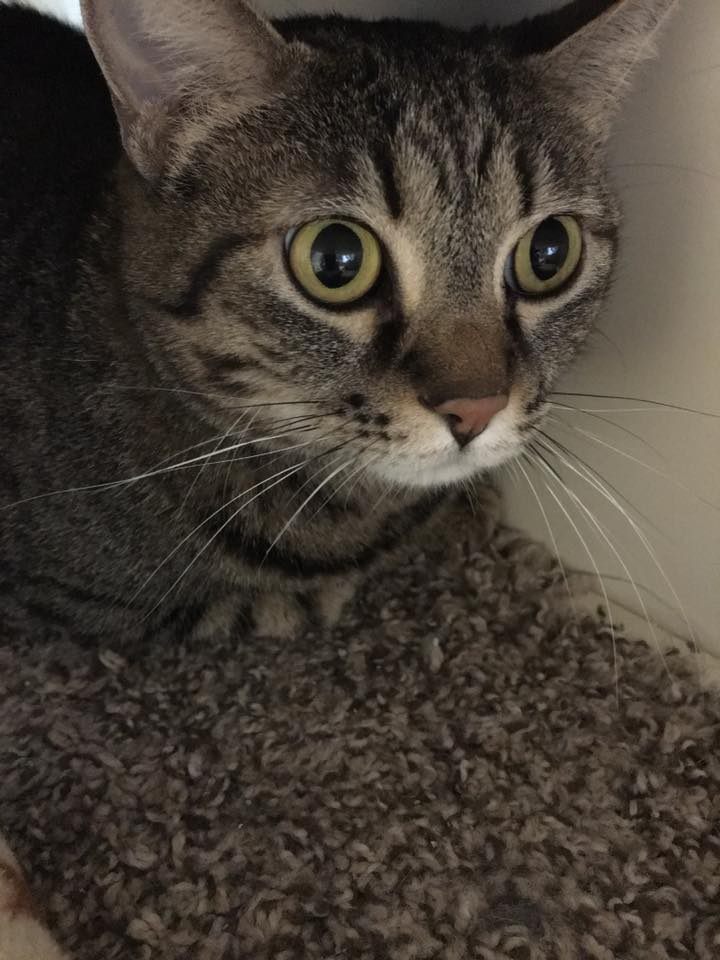
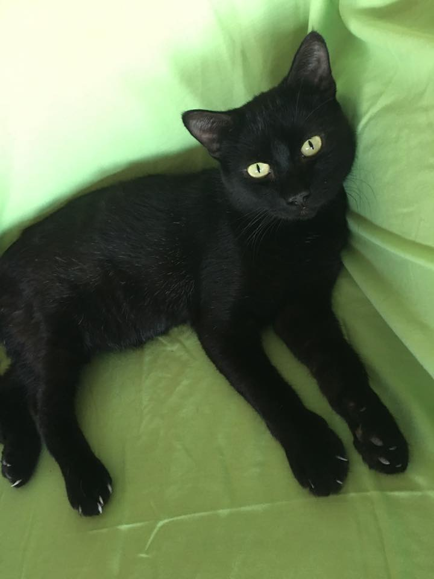

About Us
Over population is an issue affecting all animals and humans. As such, this website is dedicated to all the animals who have lost their lives to over population.
Please remember to spay and neuter your pets.

Contact Us
For any questions or concerns about Cattails please contact Natalie Young at 785-565-2433 (Call/Text)
This website is currently being developed.
For more information please go to https://github.com/jsdokos/catTailsWebsite
This website was developed by Jacob Dokos using Foundation 6 and is hosted using Github Pages. To view the source code, please visit my Github Webpage.